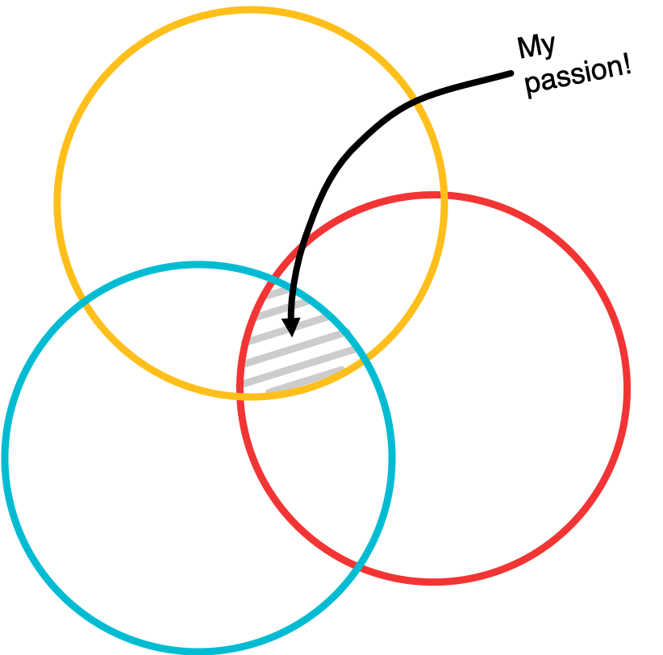

Hey, I'm Jen!
I did my undergrad at NYU Stern where I studied business, concentrating in marketing and management. While at NYU, I had the opportunity to do multiple internships and study abroad twice. By working alongside people of different backgrounds and meeting people through my travels around the world, I quickly realized just how facinating people are.
After graduating I worked at Nielsen doing market research, where I studied people's viewing habits online and on TV. In doing so, I was able to advise companies on how to manage their digital and TV advertising presence. While with the team, I used proprietary software and saw firsthand how complex and important product design and development was. But I also realized that it was critical to have leaders that were able to see the future of the product and bring the development team together to bring that vision to fruition. As a result, I decided to go to grad school at the University of Michigan for Human Computer Interaction and User Experience. I completed this program in April 2020.
Through all of these experiences, I realized my passion lies at the intersection of BUSINESS, TECHNOLOGY, & DESIGN.
